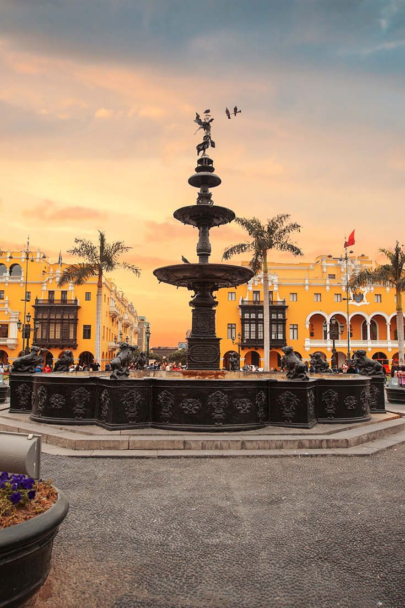
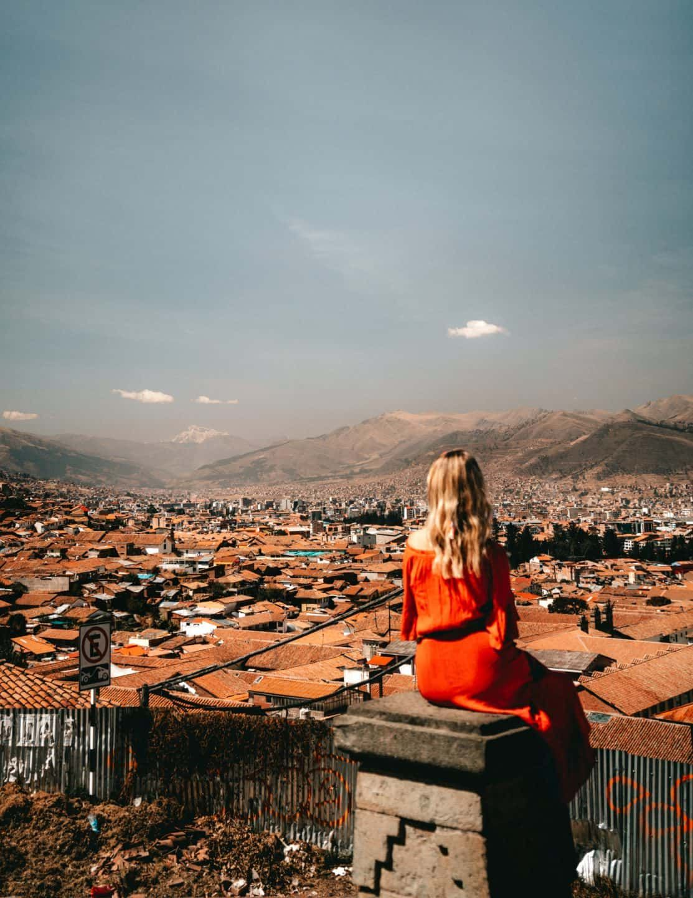
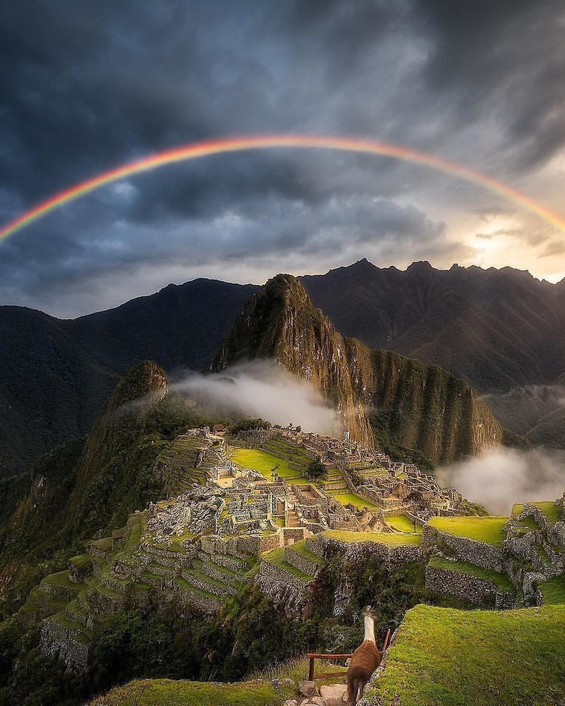
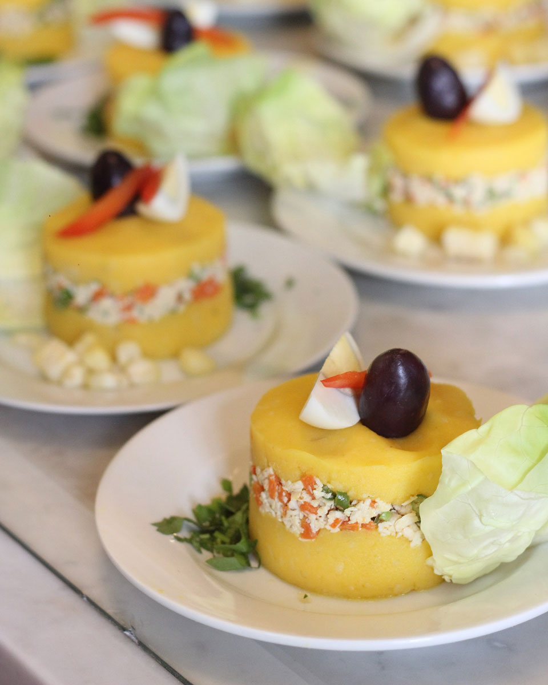
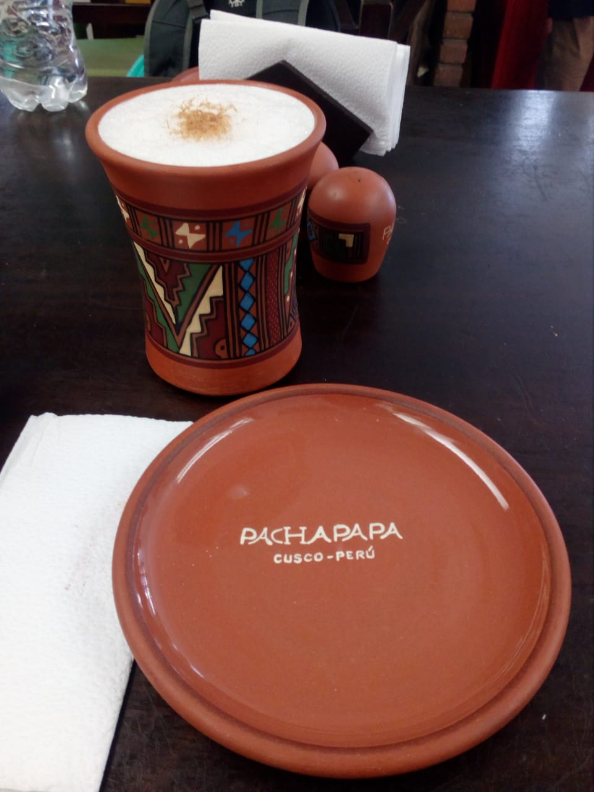

Peru is the third largest country of South America, is it is located at the central pacific cost, it limits with Bolivia, Brazil, and Chile to the east and south, and Colombia and Ecuador to the north. Lima, the capital city well known as "the city of kings" is situated on the central coast and it is a beautiful town of interest due to their architectural and colonial structures that you may appreciate in different points of the City. Peru is divided into 24 departments and counts with 3 important geographic regions such like: the coast, (ocean Pacific), the highlands and the Amazon jungle. Its geographic characteristic gives it a wide versatility of ecosystems and a diverse climate zones, making Peru one of the world's most ecologically varied nations.
PERU IS A destination that begs to be explored. In this vast and storied land, ancient, colonial, and modern traditions meld together for an unforgettable cultural experience. No matter the type of traveler-history buff, adventurer, or foodie-Peru offers a myriad of activities to satisfy every appetite. It's no surprise that its ancient sites, beautiful topography, and diverse ecosystem attract visitors from all over the world, making it one of the most popular destinations in South America.
Places to Go
Lima
Known as the City of the Kings, Lima is Peru's capital city and a symbol of its Spanish colonial history, industry, and independence. First-time visitors should check out the local museums and get a taste for Peru's depth of history. Museo Larco has an ancient collection of pre-Columbian exhibits of Peru's indigenous people, where guests can also enjoy beautiful gardens and an on-site restaurant. There's no better way to enjoy the coastal views of Lima than in the lush neighborhood of Miraflores. Stroll through Parque del Amor, which offers spectacular views of the Pacific Ocean, or head to the ancient clay pyramid of Huaca Pucllana for a dose of history. You can visit during the day or at night when lights make it a sight to behold. If you need to get some shopping in, the Larcomar is the place.
Cusco
Lima may hold the title as the official capital of Peru, but Cusco is the original seat of power for the
Inca empire. Declared a World Heritage Site by UNESCO in 1983, it is apparent why it deserves that title.
Cusco is a beautiful city. From its Inca and 16th century colonial architecture, to its narrow, winding streets, the city
has a romantic vibe with a distinct European feel. While there are many places to stay, Inkaterra La Casona is a standout.
The 16th century manor house was restored into a 11 suite boutique hotel situated in the historic Plaza de las Nazarenas.
Cozy features, traditional Incan and Spanish decor, and a central open courtyard make for an unforgettable stay.
Cusco's main square, the Plaza de Armas, is perhaps the city's most iconic site and a prime spot for a leisurely stroll
and people-watching. The square is also surrounded by many eclectic shops and restaurants. The awe-inspiring Cusco Cathedral
sits on periphery of the square and is a UNESCO World Heritage Site. Archeological relics, artifacts, and colonial works of
art are displayed within.
After a long day of touring the city stop at the Museo del Pisco, which offers cocktail classes and flight tastings
of pisco, a distinctly Peruvian aperitif. Sit back and enjoy the scenery.
If you have the time, there is an all-day excursion from Cusco to the famous Rainbow Mountain (also known as Vinicuna). The elevation is high, so you need to take that into consideration for the hike. It is definitely worth the trip as the site is stunning!
Machu Picchu
This seminal destination is probably what drives most people to visit Peru. Considered one of
the new 7 Wonders of the World (alongside heavy hitters such as the Great Wall of China and the Roman Colosseum) Machu
Picchu doesn't disappoint.
One of the most memorable ways to get to Machu Picchu is via the Inca Rail, which departs from Cusco or Ollantaytambo.
The rail journey transports passengers through the spectacular views of the Sacred Valley's countryside. Besides, who
doesn't love a majestic train ride?
To visit Machu Picchu you need to buy your ticket in advance of your trip. To help regulate the amount of people who visit
the site each day, there are a limited number of tickets available. You can purchase them online at the Ministerio de Cultura's
webpage. The ticket purchasing site is only available in Spanish, so follow this guide.
The weather here can be temperamental-sunny and warm one moment and gray and raining the next. Be sure to dress in layers,
pack light, and bring waterproof jackets and gear. Enjoy the view and the few native llamas and alpacas that call Machu Picchur
home!
Famous Food
CAUSA RELLENA
The Causa Rellena is a unique traditional dish with lots of history from Peru. On the surface, it
looks like a cake stuffed with vegetables, kind of like a healthy dessert that your parents tricked you into eating when you
were a kid. In reality, it is a dish made with two slices of fried potatoes with different kinds of ingredients stuffed in
the middle. The filling in the middle can be a permutation of chicken, salad, or seafood.
In English, Causa Rellena translates to a stuffed cause. This translation literally does not make any sense unless you know
history behind it.
Back in the Pacific war, Peru was fighting Chile alongside with Bolivia. When supplies and food came short during the war,
the women would go around villages asking for whatever they could get. With more than 3,000 types of potatoes in Peru, it
wouldn’t surprise you that they were able to gather some potatoes and vegetables such as corn, cabbage, and carrots.
With all the ingredients, the women made what is today known as the Causa Rellena for the soldiers. And when the women were
handing the "stuffed causes" to the tired soldiers, they would say "This is for the cause". Hence, the name Causa Rellena
was born.
CHICHA DE JORA
Chicha de Jora is pretty much Chicha Morada's cousin, expect that Chicha de Jora is fermented and
alcoholic content. Jora is a type of yellow corn found commonly in the Andes mountains.
The process of fermentation is very similar to the fermentation process of European-styled beers. However, Chicha de Jora
usually contains only around 1-3% alcohol.
Chicha de Jora is known as corn beer of Peru.